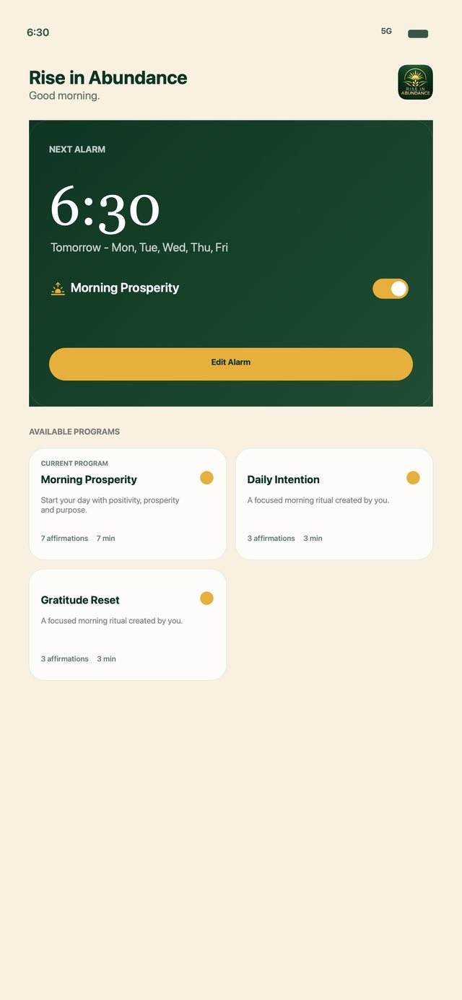
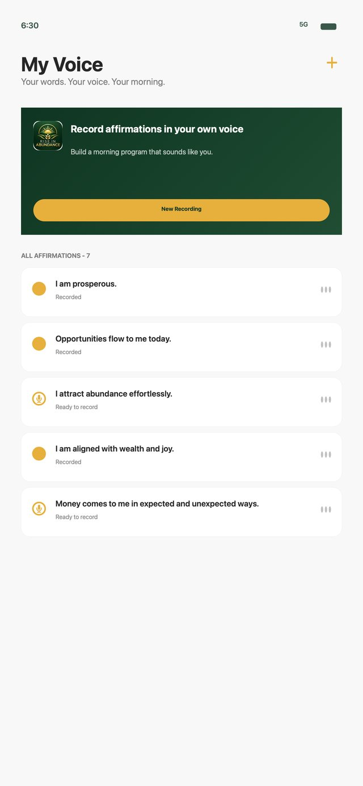
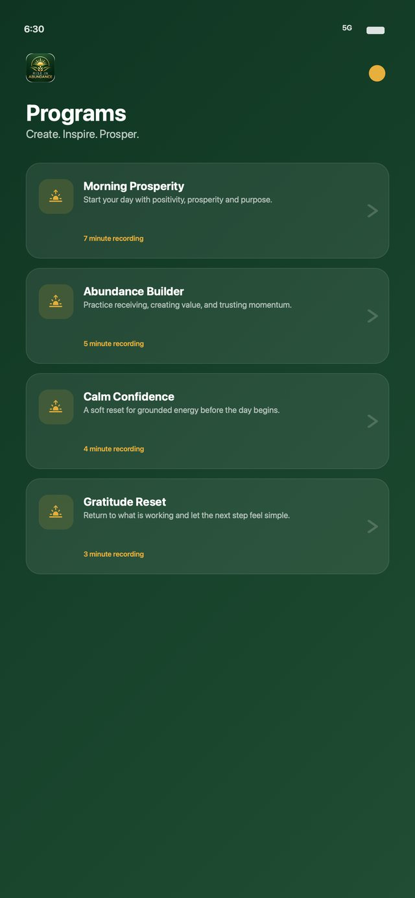

Wake up to your abundant self, every day.
Rise in Abundance turns your morning alarm into a ritual. Instead of a harsh ringtone, you wake to affirmations spoken in your own voice, woven together with calming sounds, so the first words you hear each day are the ones you chose.
Create. Inspire. Prosper.

“Your morning sets the tone for everything.”The idea behind Rise in Abundance
Three simple steps to your first abundant morning
Set it up once, the night before, and wake up to a morning ritual that sounds like you. You can come back to these steps any time from the Home screen.
Record your affirmations
Write the words you want to live by, then record each one in your own voice. Re-record any time until it feels right. Your recordings stay on your device.
Create your program
Combine your affirmations with ambient sounds and gentle tones into a morning program. Choose the order, how long it plays, how it loops and how loud each layer is.
Add it to your alarms and intentions
Pick a time and the days of the week, choose the program to play, and go to sleep knowing tomorrow starts with intention.
An alarm that lifts you up
Your next alarm is front and centre the moment you open the app, with the program it will play. Toggle it on or off with one tap, or edit the time, days and program whenever your routine changes.
- Alarms for the days you choose, such as weekdays only
- Each alarm plays the morning program you pick
- A soft musical tone first, with affirmations that can fade in gradually
- Real alarms that ring like the built-in Clock app
- Intention reminders to keep your goals in mind through the day

Your words. Your voice. Your morning.
There is something different about hearing your own voice tell you who you are becoming. In My Voice you write your affirmations, record them, play them back and record over them until they sound exactly right.
- Record affirmations like “I am prosperous” or “Opportunities flow to me today”
- See at a glance which affirmations are recorded and which are ready to record
- Edit the text and re-record at any time
- Recordings are kept even if you change or delete a program

Morning programs for every kind of day
A program is your morning soundtrack: a set of affirmations layered over the sounds you love, timed to the minute. Start with a ready-made program, or build your own from scratch.
- Choose your affirmations and the order they play in
- Layer ambient sounds and frequency tones underneath
- Set the length, playback loop and volume of each layer
- Add your own sound files and images that inspire you
Begin with a ritual, then make it yours
Each program is a starting point. Swap in your own affirmations, change the sounds, or create something completely new.
Morning Prosperity
Start your day with positivity, prosperity and purpose.
Abundance Builder
Practise receiving, creating value and trusting momentum.
Calm Confidence
A soft reset for grounded energy before the day begins.
Gratitude Reset
Return to what is working and let the next step feel simple.
Sounds that set the mood
Layer your affirmations over nature sounds, singing bowls and gentle tones. Many people find these sounds calming and grounding first thing in the morning.
Build a practice that sticks
A morning ritual works best when it is tied to what you want in life. Set goals, break them into milestones and celebrate what you achieve.
Goals
Write down what you are calling in, from a financial target to a new habit, and link your affirmations to it.
Milestones
Break each goal into milestones and tick them off as you reach them, so you can see your progress.
Achievements
Mark a goal as achieved and keep a record of everything you have manifested.
Private by design
No account and no ads. Your voice recordings and affirmations stay on your device.
What is an affirmation alarm?
It is an alarm that wakes you with a short program of positive affirmations, recorded in your own voice and layered over calming sounds, instead of a standard ringtone.
Why record affirmations in my own voice?
Many people find that hearing their own voice makes affirmations feel more personal and believable. You can re-record any affirmation whenever you like.
Which devices does it work on?
Rise in Abundance is made for iPhone and iPad.
Do I need an account?
No. There is no sign-up. Open the app, record your first affirmation and set your first alarm.
Where are my recordings stored?
On your device. Your voice recordings and affirmations are not uploaded to me or anyone else. See the privacy policy for details.
Tomorrow can start differently
Record your first affirmation tonight and wake up to your abundant self in the morning.